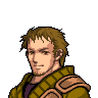
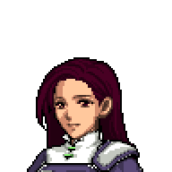
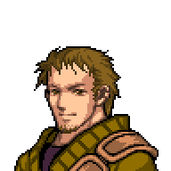
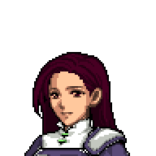

At the Forest with the Villagers
 




The villagers lead you out of the village and escort you through the plains and go to left, leading to the forest. One of the villagers makes a half circle shape with her left arm, and a circle with her right hand. She shakes her right hand, emphasizing the circle and oinking. Afterwards, she emphasizes the half circle, indicating the way you all were going.
Eventually as they escort you, they reach a point where they stop and point you straight. You gave a thankful nod and...